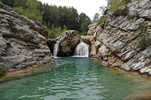

El rio Fraile es un paraje en la sierra de Bicorp impresionante, en el que podremos disfrutar de este bonito rio, se puede descender por el completando así una ruta de barranquismo de nivel medio, que abarca 3,5km. También es posible relajarse en alguna de las múltiples pozas naturales o hacer rutas de senderismo en este idílico entorno.